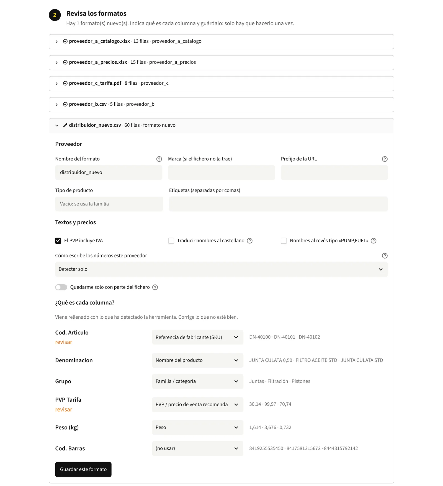
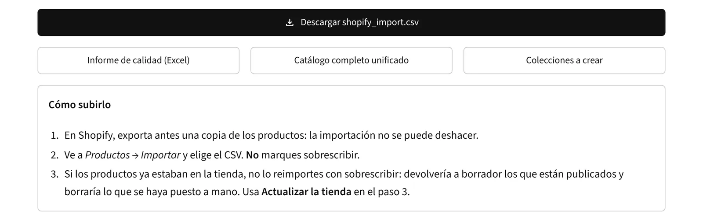
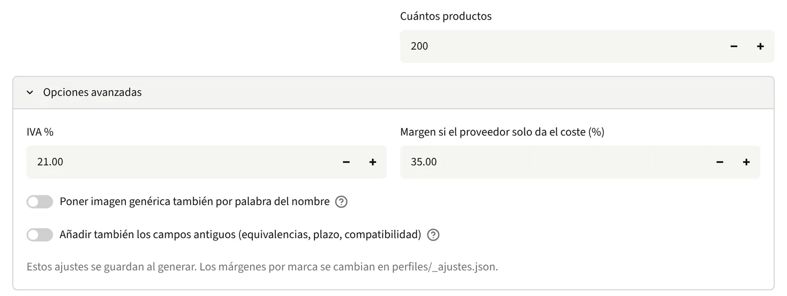
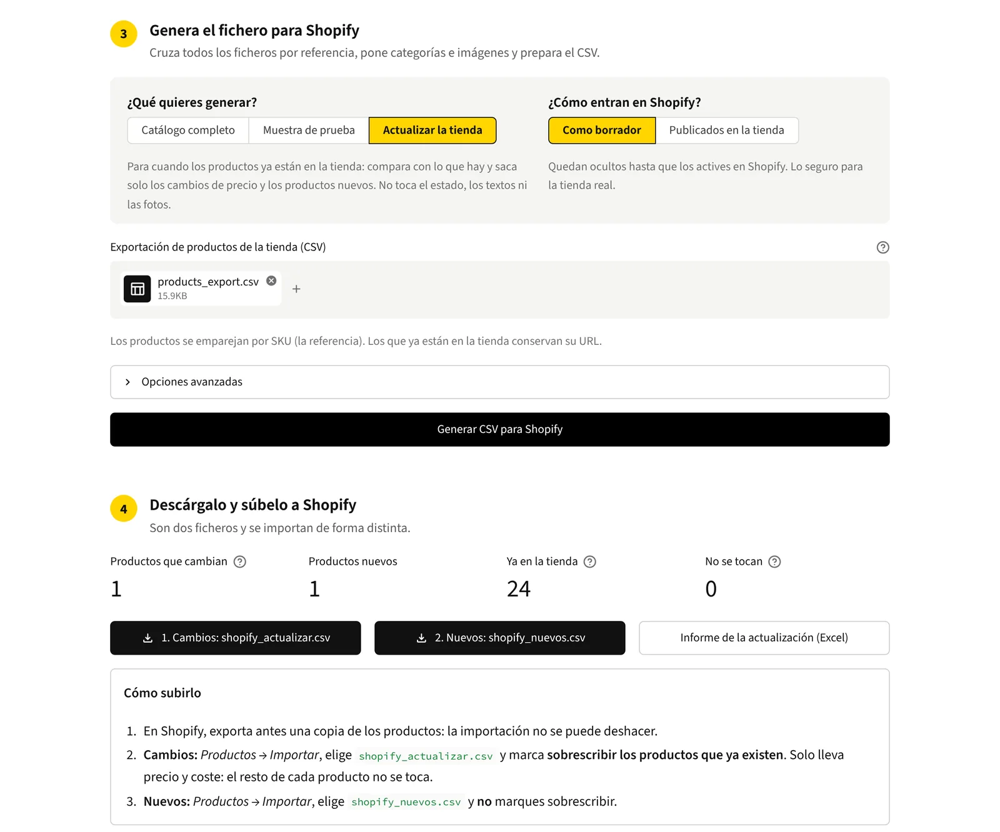

Primero, para qué es la web
Antes de proponer nada pregunté para qué era la web: informar, vender o las dos cosas. Las dos. Eso apartó el rediseño y señaló la mitad que fallaba.
/ Caso · Datos y herramientas para ecommerce
Una empresa de recambios de motor pidió una web nueva. La web estaba bien. La tienda no: tenía 192 productos de más de mil, porque cada proveedor manda su catálogo en un formato distinto y ninguno tiene API. Así que en vez de rediseñar construí la pieza que faltaba: una herramienta que lee cualquier fichero de proveedor, lo unifica, lo clasifica y le da a Shopify un fichero que puede importar.
Qué es esta página: el cliente queda en el anonimato, igual que sus proveedores y marcas. Las cifras salen de pasar la herramienta por los catálogos completos de los proveedores. El código lo escribí programando en pareja con Claude, como el resto de esta web: yo decidí qué construir y comprobé cada resultado contra los datos.
/ En corto
Antes de proponer nada pregunté para qué era la web: informar, vender o las dos cosas. Las dos. Eso apartó el rediseño y señaló la mitad que fallaba.
La herramienta reconoce un fichero de proveedor por sus cabeceras. Un formato nuevo se describe una vez, se guarda como perfil y a partir de ahí se reconoce solo.
Categorías, imágenes, IVA y márgenes están en CSV que se abren con Excel. Añadir un proveedor o una categoría es configurar, no programar.
El script que monta la tienda solo cuenta lo que haría. Escribe únicamente cuando se le dice, nunca borra y no guarda credenciales.
Con los productos ya en la tienda, la herramienta compara con lo que hay y envía solo los cambios de precio y coste. Estado, textos y fotos se quedan como están.
Cada cambio se pasó por el catálogo completo y se comparó producto a producto. Un arreglo que parecía obvio habría quitado 840 productos, así que no se hizo.
/ 01 · El problema
El encargo era una web nueva. Al mirar la que tenían, no estaba mal, así que la pregunta útil era para qué la querían. La respuesta fue las dos cosas: presentar la empresa y vender. La parte de presentación funcionaba. La tienda tenía 192 productos cuando el catálogo pasa de mil, y ni siquiera esos 192 estaban bien: fallos en las categorías y enlaces del menú que no llevaban a ningún sitio.
La causa estaba antes de la web. Cada proveedor manda precios y referencias a su manera: hojas de Excel, exportaciones en CSV, catálogos en PDF, cada uno con columnas y nombres distintos para lo mismo. Ninguno ofrece API. Subir un producto a la tienda era copiarlo a mano del fichero que lo tuviera, y por eso la mayoría nunca llegó.
La decisión: mantener la web y la plataforma, y arreglar el proceso que alimenta la tienda. Un rediseño se habría visto más y no habría cambiado nada de los 192.
/ 02 · Los datos
Antes de diseñar nada pasé todas las fuentes de proveedores por la misma cadena y conté lo que salía. Los catálogos completos son mucho más grandes que lo que venderá la tienda (unos mil productos para empezar), lo que los convertía en una buena prueba de carga.
Cinco fuentes juntas. Se descartan las filas que no son recambio de motor, se juntan las piezas repetidas y quedan fuera las que ninguna fuente da con precio.
| Medido con los ficheros completos | Resultado |
|---|---|
| Productos distintos tras juntar todas las fuentes | 37.948 |
| Listos para Shopify | 34.379 variantes en 34.339 fichas |
| Fuera porque ninguna fuente da precio | 3.569, listados en el informe con el motivo |
| Conflictos entre fuentes | 0 (si dos ficheros no coinciden, la herramienta dice qué fichero y qué fila) |
| Productos que llegan con foto, peso, código de barras o plazo | 0 |
| Productos que llegan sin descripción | 36.514 |
Lo que significaba: la herramienta no podía limitarse a mover datos. Tenía que poner lo que nadie manda, como las imágenes o el aviso de disponibilidad, y decir con claridad lo que sigue faltando en vez de inventarlo.
/ 03 · La herramienta
Una cadena en Python con una pequeña interfaz web local encima. Los ficheros entran tal como llegan; sale un fichero de importación para Shopify y un informe de calidad. Funciona igual con 200 productos que con 37.948. No hay servidor ni base de datos: todo corre en el ordenador de quien la usa y cada vez se empieza desde los ficheros.
Excel, CSV o PDF. Encuentra la cabecera aunque haya títulos encima y salta las cabeceras repetidas en cada página del PDF.
Compara las cabeceras con los perfiles de proveedor guardados. Un formato nuevo se describe una vez en la interfaz.
Normaliza referencias y precios, junta la misma pieza de varios ficheros y apunta cada desacuerdo.
Traduce nombres, asigna uno de 15 sistemas del motor, datos del vehículo, una imagen genérica por tipo de pieza y variantes por medida.
CSV de Shopify, una tabla maestra con el origen de cada dato y un informe en Excel de lo que necesita a una persona.

Los cuatro primeros ficheros se reconocen por sus cabeceras. El quinto es un formato nuevo: la herramienta propone qué es cada columna, marca lo que conviene revisar y lo guarda para la próxima vez.
| Pieza | Qué hace |
|---|---|
| Perfiles de proveedor | Un fichero pequeño por formato: qué columna es la referencia, cuál el precio, si los precios llevan IVA, cómo escribe los decimales el proveedor. |
| Reescritura de nombres | Los nombres en inglés llegan como "SUSTANTIVO,DETALLE". Se les da la vuelta y se traducen con un glosario de unas 270 expresiones: "GASKET,EXHAUST MANIFOLD" pasa a "Junta de colector de escape". |
| Sistemas del motor | 15 sistemas que siguen las categorías que ya tenía la tienda. Se asignan con reglas en orden en un CSV; 177 de 34.339 fichas siguen cayendo en "Otros". |
| Imágenes genéricas | Ningún proveedor manda fotos, así que cada tipo de pieza lleva una imagen genérica, marcada como orientativa en su texto alternativo: 22.211 fichas cubiertas. |
| Interfaz | Cuatro pasos en el navegador, que se abre con doble clic: subir, revisar las columnas, elegir qué generar y descargar. |
| Script de montaje de la tienda | Crea los campos propios, una colección automática por sistema del motor y los enlaces del menú, con la Admin API de Shopify (GraphQL). |

El CSV para Shopify, el informe de calidad en Excel, el catálogo unificado y las colecciones a crear, con los pasos para importarlo sin pisar lo que ya hay. Datos de ejemplo.
/ 04 · Decisiones
Quien la va a usar en el día a día no soy yo. Eso cambió más decisiones que cualquier limitación técnica.
| Decisión | Por qué |
|---|---|
| Disponibilidad bajo consulta | Sin API de los proveedores no hay una cifra de stock fiable. Cada producto dice "consulta disponibilidad" con el teléfono de la tienda en vez de un "en stock" que nadie puede garantizar. El campo ya existe para cuando haya datos reales. |
| Imágenes por tipo de pieza, no por nombre | Buscar la imagen por palabras del nombre añadiría 3.100 fotos más. Revisé una muestra: casi todas eran erróneas, como una tapa de bomba con la foto de la bomba entera. La opción existe, apagada. |
| Probar primero con una muestra | Una primera importación de unos 33.000 productos se atascó. Desde entonces la herramienta genera muestras del tamaño que se quiera, repartidas entre familias, y puede repetir la misma para comparar el antes y el después. |
| Un modo aparte para actualizar | Reimportar todo con "sobrescribir" devolvería a borrador los productos publicados y vaciaría lo que se haya rellenado a mano. El modo actualizar lee la exportación de la tienda, empareja por SKU y envía solo las columnas que cambian. |
| Montaje seguro de la tienda | Simula salvo que se le diga lo contrario, mira lo que existe antes de crear nada, nunca borra, pide las credenciales al arrancar y usa una llave que caduca en 24 horas. |
| Avisar antes de elegir | Dos ficheros que no coinciden, la misma referencia con dos marcas, un perfil a punto de pisar otro: todo se le enseña a quien la usa en vez de decidirlo por su cuenta. |

La muestra reparte 200 productos entre familias para probar antes de subirlo todo. La imagen por nombre está apagada; IVA y margen se cambian aquí sin tocar el código.
Una celda vacía en el CSV borra el valor de la tienda.
Lee la exportación de la tienda, empareja por SKU y compara.

Una exportación de ejemplo de 24 productos, con un precio viejo y un producto sin subir: la herramienta encuentra justo un cambio y un producto nuevo, y explica cómo se importa cada fichero.
/ 05 · Incidencias
Casi todo lo de arriba existe porque antes algo salió mal. Donde la causa no se investigó, la tabla lo dice.
| Síntoma | Causa | Lección |
|---|---|---|
| Importación de ~33.000 productos atascada | Sin investigar; se volvió a empezar por partes. | Empezar por una muestra. De ahí salió el modo muestra. |
| ~3.000 productos importados invisibles | No estaban publicados en el canal de la tienda online. | Publicar va ahora en la importación, como una columna más. |
| Las bombas de mano desaparecían | "HAND" se traducía como "manual", y el filtro descarta los manuales de mantenimiento. | Una traducción puede hacer saltar un filtro más adelante. Ahora es "de mano". |
| 514 productos en "Otros" | Faltaban reglas para cojinetes, retenes, mangueras, piezas hidráulicas y útiles de taller. | Reglas nuevas y un sistema nuevo, Hidráulica: bajó a 177. El orden de las reglas importa. |
| 12 productos con la foto de otro | Sin analizar; se encontraron revisando la tienda a ojo. | Retiradas y comprobadas una a una: 124 de 188 productos con imagen, ninguno de los 12. |
| El script de montaje fallaba en Windows | El Python del equipo se fiaba de un certificado caducado. | Llevar los certificados (certifi) con la herramienta en vez de fiarse del equipo. |
| No se podía crear la app como antes | Shopify dejó de permitir apps personalizadas nuevas en el panel el 1 de enero de 2026. | App creada en el Dev Dashboard con credenciales de cliente. Cada app pertenece a su tienda. |
| "0.206" kg leído como 206 kg | Un punto seguido de tres cifras se tomaba como miles, como en las tarifas europeas. | Encontrado al revisar el código, antes de que llegara ningún peso. Cada perfil indica ahora su formato de decimales. |
| El filtro encajaba dentro de otras palabras | "RING" también encaja en "SPRING". | Sin cambiar. Con palabras completas saldrían 840 productos, 420 de ellos muelles. Qué piezas se venden es una decisión de negocio, no un arreglo de código. |
/ 06 · Qué demuestra
| Afirmación | Prueba |
|---|---|
| Diagnóstico antes de proponer | El encargo era una web; el arreglo fue un proceso de datos. Los 192 frente a más de 1.000 lo decidieron. |
| Cada exclusión, listada | 37.948 productos de fuentes que no coinciden en formato, idioma ni datos, con cada exclusión y cada conflicto listados en vez de escondidos. |
| Segura para la tienda | Montaje que simula, sin borrados, sin credenciales guardadas, y un modo actualizar que no puede tocar estado, textos ni fotos. |
| Cada cambio, comprobado | 37 pruebas automáticas, y cada cambio comparado producto a producto con el catálogo completo antes de darlo por bueno. |
| Escalable sin tocar código | Probada con 37.948 productos cuando la tienda empieza con unos mil. Un proveedor nuevo es un formato que se guarda una vez, y categorías, imágenes y márgenes son CSV. El mismo proceso sirve para una muestra de 200 o para el catálogo entero. |
| Entregada | Una interfaz de cuatro pasos, una guía de dos páginas para quien la usa, documentación completa y un repositorio privado con un commit por cambio. |
Los datos de detrás: qué traen las cinco fuentes, contado campo a campo frente a lo que necesitan Shopify y Google, está en un estudio aparte: ¿Qué le falta a un catálogo de proveedor para Shopify?
/ Siguiente
Si tu tienda depende de ficheros de proveedores que no encajan entre sí, escríbeme y lo miramos.